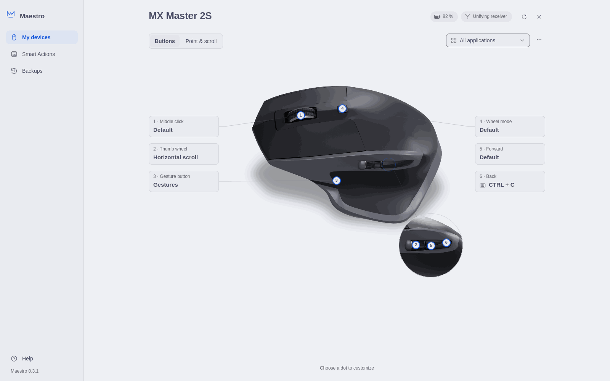
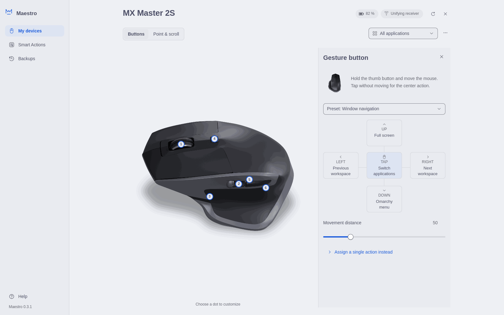
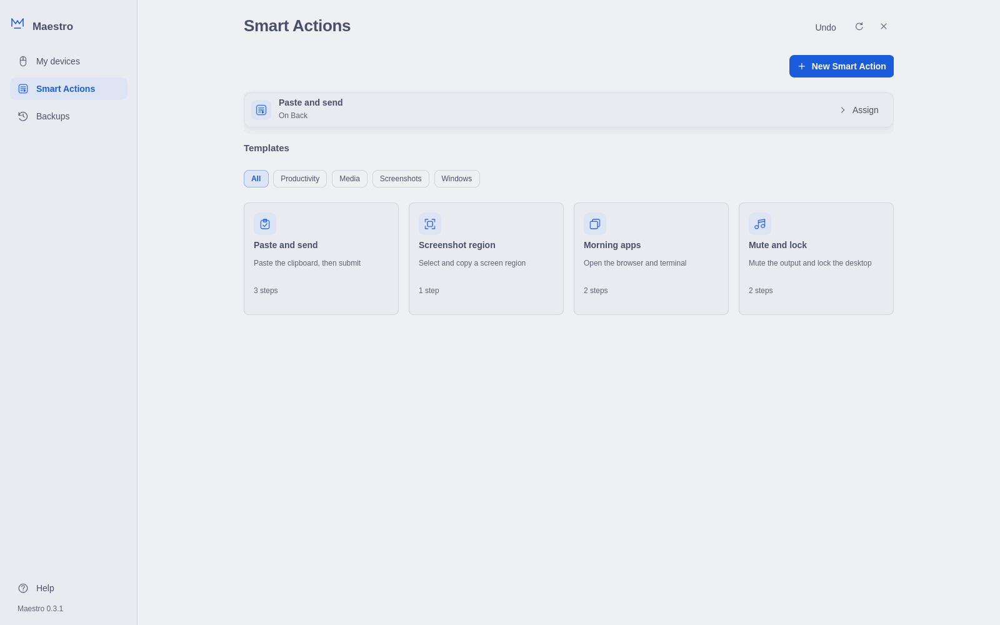
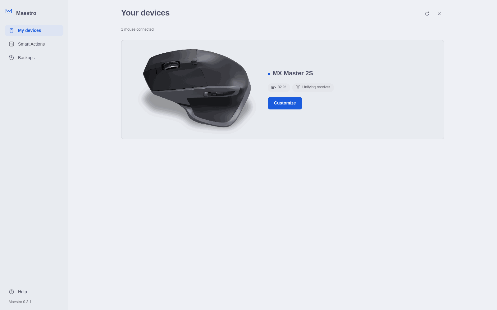
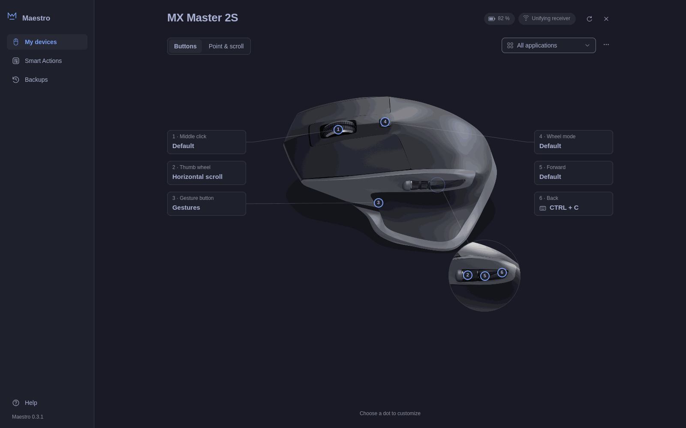
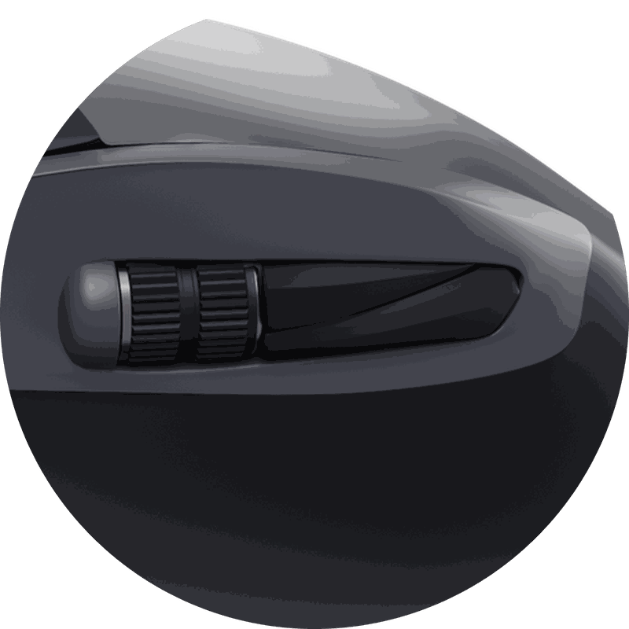
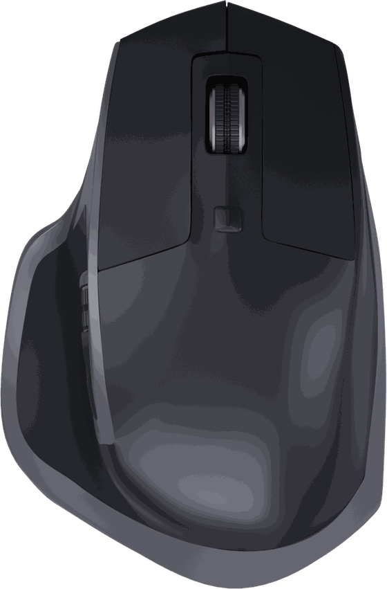

Maestro is a settings app, bar widget and background service for Logitech MX mice. Remap buttons, set up gestures and per-app profiles, and keep your pointer settings through sleep and reconnects. Free and open source.
Maestro talks to the mouse directly over Logitech's HID++ protocol. It reads what your mouse supports at runtime and only shows controls that will work.
Bar widget
Battery level and charging state in the Omarchy bar. Click it for DPI presets, wheel mode, SmartShift and scroll direction.
Clickable mouse map
The settings app shows your mouse with a numbered dot on each control. Choose a dot to change what that button does.
Gesture button
Hold the thumb button and move the mouse. Pick a preset for windows, workspaces, media or zoom, or set each direction yourself.
Buttons and shortcuts
Assign any keyboard shortcut, mouse click, Omarchy or Hyprland action, or a program to launch. Record a shortcut by pressing it.
Smart Actions
Chain shortcuts, typed text, delays and commands into one routine, try it, then put it on a button or gesture.
Per-app profiles
Different buttons, gestures and thumb wheel in each app. Maestro follows the focused Hyprland window and switches for you.
Point and scroll
Pointer speed (DPI), SmartShift threshold, ratchet or free-spin wheel, and natural scrolling, using the values your mouse reports.
Restored after sleep
The background service reapplies your settings and button mappings when the mouse wakes, reconnects or the receiver resets.
Battery at a glance
Percent, charging mark and a warning color at 15% or less. An asleep or missing mouse shows a dimmed icon.
The settings app
Made for the way Omarchy looks and works.
A compact window that opens from the launcher or the bar, follows your Omarchy theme, and saves every change as you make it, with Undo one click away.

Buttons: choose a numbered dot or its label to open the action list.

Gestures: a preset, a direction cross you can edit, and an adjustable movement distance.

Smart Actions: your routines and where they are assigned, above ready-made templates.

Your devices: every connected MX mouse, its battery and how it is connected.
Light and dark
Follows your Omarchy theme.
Maestro reads the colors of your current Omarchy theme and updates when you switch. Text and controls were checked for contrast against all 22 themes that ship with Omarchy.
Opens from the app launcher or from Open Maestro in the bar panel
Keyboard focus rings and labels on every control
Optional Hyprland rule that centers the window

Buttons
Six controls. Any action you want.
Choose a control and search the action catalog, record a keyboard shortcut, pick a Smart Action, or enter a program and its arguments. Try it runs the action right away so you can check it before you move on.
Catalog
Omarchy, windows and workspaces, media, browser, editing, zoom and mouse clicks
Shortcuts
Letters, numbers, F1 to F24, arrows and media keys with Ctrl, Alt, Shift and Super
Commands
Run directly with their arguments, never through a shell
Default
Any button can stay native. Held keys and clicks stay held, so middle-button drags still work

Gesture button
Hold, move, release.
Hold the thumb button and move the mouse in a direction, then let go. A tap without moving runs the center action. The first direction to pass the movement distance wins, and you can change that distance.
UpFull screen
LeftPrevious workspace

TapSwitch applications
RightNext workspace
DownOmarchy menu
Workspace, window and fullscreen actions go through Hyprland. Choosing a gesture preset replaces a single action on that button, and assigning a single action turns gestures off.
Smart Actions
One button, several steps.
Build a routine from keyboard shortcuts, typed text, delays, commands, catalog actions and mouse clicks. Drag steps into order, try the routine, then choose Assign to a button. Start from a template or from scratch.
Paste and send
Paste the clipboard, then submit.
Ctrl + V
Wait 150 ms
Enter
Screenshot region
Select and copy a screen region.
Run omarchy capture screenshot region copy
Morning apps
Open the browser and terminal.
Run omarchy launch browser
Run omarchy launch terminal
Mute and lock
Mute the output and lock the desktop.
Mute the default audio output
Run omarchy system lock
Routines run one at a time per trigger, up to 50 steps and 30 seconds. Disconnecting the mouse or stopping the service cancels a running routine and releases any held keys.
Per-app profiles
Choose Add application to give an app its own buttons, gestures and thumb wheel. Open windows are listed first, with their icons. Anything you leave unset stays the same as All applications.
Profiles match the Hyprland window class and, optionally, its title. The first matching profile wins. A profile switch waits for held buttons to be released.
Point and scroll
Pick a DPI value your mouse supports, set the SmartShift threshold, switch between ratchet and free-spin, and turn natural scrolling on or off. Changes apply to that mouse in every app.
On mice that report a programmable thumb wheel, it can control volume, zoom, tabs or workspaces. Other mice keep native horizontal scrolling and the app explains why.
Survives sleep
The background service reapplies DPI, SmartShift, scroll direction and button mappings after the mouse wakes or reconnects, and checks every few seconds in case a wake event is missed.
Stop the service and it releases every remapped control. Your pointer settings stay as they are.
Privacy and trust
Your mouse, your machine, your files.
Maestro has no servers to talk to. Everything it does happens between your computer and your mouse.
Local only
No network connections. Settings are sent to the mouse over its own receiver or Bluetooth link.
No account
Nothing to sign up for or sign in to. It runs as your desktop user, never as root.
No telemetry
No usage tracking, analytics or crash reporting. Device reports leave serial numbers out.
Open source
MIT licensed, written in Python using only its standard library. Read every line on GitHub.
Readable config
One JSON file at ~/.config/maestro/config.json, checked in full before anything is saved.
Backups and Undo
Every change keeps a backup. Undo the last change in one click, or restore any of the last 20 copies.
Mice only
On a receiver shared with a keyboard, Maestro sends commands only to the mouse.
No vendor software
No Logitech app and no cloud sign-in. Maestro speaks HID++ itself, without Solaar or logiops.
Supported devices
Built for the MX family. Tested on the MX Master 2S.
Maestro discovers each mouse's features at runtime instead of relying on a fixed list. Only the MX Master 2S on a Unifying receiver has been tested on real hardware so far. The other mice are expected to work and need testers.
Mouse
Connection
Status
MX Master 2S
Unifying, Bluetooth
Tested on Unifying. Bluetooth needs a tester
MX Master
Unifying, Bluetooth
Expected Testers welcome
MX Master 3
Unifying, Bluetooth
Expected Testers welcome
MX Master 3S
Bolt, Bluetooth
Expected Testers welcome
MX Master 4
Bolt, Bluetooth
Expected Testers welcome
MX Anywhere 2, 2S
Unifying, Bluetooth
Expected Testers welcome
MX Anywhere 3
Unifying, Bluetooth
Expected Testers welcome
MX Anywhere 3S
Bolt, Bluetooth
Expected Testers welcome
MX Vertical
Unifying, Bluetooth
Expected Testers welcome
MX Ergo
Unifying, Bluetooth
Expected Testers welcome
MX Ergo S
Bolt, Bluetooth
Expected Testers welcome
Have one of these mice?
Run the device report and paste the output into a GitHub issue. It lists the receiver, features and buttons, and leaves out serial numbers. After a plugin install, the command is in the plugin folder: ~/.config/omarchy/plugins/io.github.pughouselabs.maestro/bin/maestro.
$ maestro diagnose --json
Install
Up and running in a minute.
Install with Omarchy
Run this in a terminal. It adds Maestro as a shell plugin and turns on the bar widget.
For a manual install, run omarchy plugin disable io.github.pughouselabs.maestro, then unlink ~/.config/omarchy/plugins/io.github.pughouselabs.maestro.
Removing Maestro does not reset the mouse. DPI, SmartShift and scroll direction keep their last values, so set them back first if you want the old ones. Your config and backups stay in ~/.config/maestro until you delete them. If you set up the background service, stop and disable it first.
FAQ
Questions, answered.
Can I use Maestro alongside Solaar or logiops?
Not at the same time. Only one program can own the mouse's HID++ connection. Stop Solaar and logiops, including any autostart entries, before using Maestro. The background service checks for them when it starts and every five seconds after that.
Does it work over Bluetooth?
Maestro supports Bluetooth and verifies the device before it reads or changes anything. So far it has only been tested on an MX Master 2S over a Unifying receiver, so Bluetooth reports from testers are very welcome.
What about the Bolt receiver?
Maestro's device core handles Bolt receivers alongside Unifying, and newer mice such as the MX Master 3S and 4 ship with it. It has not been tested on hardware yet. If you have one, a maestro diagnose --json report helps a lot.
Will it run on GNOME, KDE, Sway or X11?
Omarchy and Hyprland come first. Gestures, window actions and per-app profiles depend on Hyprland, and the background service will not start in other sessions rather than guess at their shortcuts. The code has clean extension points for other desktops, but they are not supported yet.
Does Maestro need root?
No. It runs as your desktop user. It needs access to the mouse's hidraw device, and the background service needs /dev/uinput to send key presses and clicks. The setup guide shows a udev rule that grants this to the logged-in user.
What happens to my mouse if I stop or remove Maestro?
Button remapping is temporary. When the service stops, it returns every control to its normal behavior. Pointer settings such as DPI, SmartShift and scroll direction stay at their current values.
Can I undo a change?
Yes. Every change in the app shows Saved with an Undo button, and the Backups page restores any of the last 20 saved configurations after asking you to confirm.
How much does it cost?
Nothing. Maestro is free and open source under the MIT license.